JEE Main 2023 (Session 2), 13 Apr Shift 1: worked solutions for review
Questions and options are NTA’s own images; the green option is NTA’s final key. Every solution below was written by Claude
and checked against NTA’s final key. It is not NTA’s solution. Please mark anything unclear or wrong.
Q1 · Mathematics · MCQ · ID 3666947183
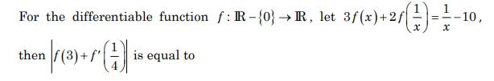
Hint 1: Replace x by 1/x to get a second equation.
Hint 2: 3f(1/x) + 2f(x) = x − 10. Solve the pair for f(x).
What this tests: Functional equations
1. f(x) = (3/x − 2x − 10)/5.
2. f(3) = (1 − 6 − 10)/5 = −3; f'(x) = (−3/x2 − 2)/5, so f'(1/4) = −10.
3. |−3 − 10| = 13.
Answer: (4)
If this felt hard: Revise Relations and Functions and derivatives.
Claude’s answer: 4 · NTA final key: 4 · agrees · Answer recomputed with SymPy (tools/verify_pyq_solutions.py)
Q2 · Mathematics · MCQ · ID 3666947184
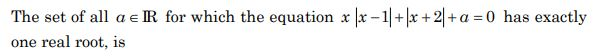
Hint 1: Look at h(x) = x|x − 1| + |x + 2|. Is it monotonic?
Hint 2: On x < −2, [−2, 1) and x ≥ 1 it is −x2 − 2, −x2 + 2x + 2, x2 + 2; each piece is increasing there.
What this tests: Monotonic functions and roots
1. h is continuous and strictly increasing, from −∞ to ∞.
2. h(x) = −a has exactly one root for every a.
Answer: (3)
If this felt hard: Revise Application of Derivatives.
Claude’s answer: 3 · NTA final key: 3 · agrees · Answer recomputed with SymPy (tools/verify_pyq_solutions.py)
Q3 · Mathematics · MCQ · ID 3666947185
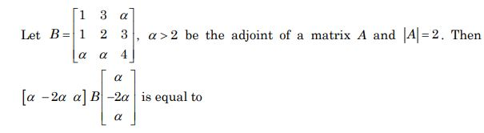
Hint 1: If B = adj A for 3 × 3, what is |B|?
Hint 2: |adj A| = |A|2 = 4. Use it to find α.
What this tests: Adjoint of a matrix
1. det B = 4 gives α = 4 (α > 2).
2. With v = (4, −8, 4): vTBv = −16.
Answer: (2)
If this felt hard: Revise Determinants.
Claude’s answer: 2 · NTA final key: 2 · agrees · Answer recomputed with SymPy (tools/verify_pyq_solutions.py)
Q4 · Mathematics · MCQ · ID 3666947186
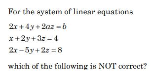
Hint 1: When is the coefficient determinant 0?
Hint 2: Det = 54 − 18a, so a = 3. Then compare equation 1 with 2 × equation 2.
What this tests: Consistency of linear systems
1. a ≠ 3: unique solution (options 1, 2 are correct).
2. a = 3: equation 1 is 2 × equation 2 only if b = 8, giving infinitely many.
3. a = 3, b = 6 gives no solution, so option 4 is NOT correct.
Answer: (4)
If this felt hard: Revise Determinants.
Claude’s answer: 4 · NTA final key: 4 · agrees · Answer recomputed with SymPy (tools/verify_pyq_solutions.py)
Q5 · Mathematics · MCQ · ID 3666947187
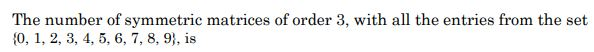
Hint 1: In a symmetric 3 × 3 matrix, how many entries can you choose freely?
Hint 2: 3 diagonal + 3 above the diagonal.
What this tests: Symmetric matrices
1. 6 free entries, 10 choices each: 106.
Answer: (3)
If this felt hard: Revise Matrices.
Claude’s answer: 3 · NTA final key: 3 · agrees · Answer recomputed by script (tools/verify_pyq_solutions.py)
Q6 · Mathematics · MCQ · ID 3666947188
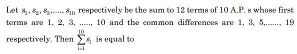
Hint 1: S12 = 6(2a + 11d) for each AP.
Hint 2: ai = i and di = 2i − 1.
What this tests: Sums of APs
1. si = 12i + 66(2i − 1) = 144i − 66.
2. Σ = 144 × 55 − 660 = 7260.
Answer: (1)
If this felt hard: Revise Sequences and Series.
Claude’s answer: 1 · NTA final key: 1 · agrees · Answer recomputed by script (tools/verify_pyq_solutions.py)
Q7 · Mathematics · MCQ · ID 3666947189
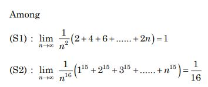
Hint 1: Think of each sum as a Riemann sum, or use Σkp ~ np+1/(p + 1).
Hint 2: 2 + 4 + … + 2n = n(n + 1).
What this tests: Limits of sums
1. S1: n(n + 1)/n2 → 1: true.
2. S2: Σk15/n16 → ∫01x15dx = 1/16: true.
Answer: (3)
If this felt hard: Revise Limits and Definite Integrals (limit of a sum).
Claude’s answer: 3 · NTA final key: 3 · agrees · Answer recomputed with SymPy (tools/verify_pyq_solutions.py)
Q8 · Mathematics · MCQ · ID 3666947190
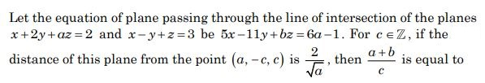
(4)
Hint 1: Plane through the line: P1 + λP2 = 0. Match it with the given form.
Hint 2: (1 + λ)/(2 − λ) = 5/(−11) gives λ = −7/2.
What this tests: Planes through a line
1. Plane 5x − 11y + z − 17 = 0, so a = 3, b = 1.
2. Distance of (3, −1·c, c): |12c − 2|/(7√3) = 2/√3 gives c = −1 (integer).
3. (a + b)/c = −4.
Answer: (1)
If this felt hard: Revise Three Dimensional Geometry.
Claude’s answer: 1 · NTA final key: 1 · agrees · Answer recomputed with SymPy (tools/verify_pyq_solutions.py)
Q9 · Mathematics · MCQ · ID 3666947191
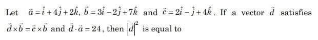
Hint 1: d × b = c × b means (d − c) × b = 0.
Hint 2: d = c + tb; use d·a = 24.
What this tests: Vector equations
1. c·a = 2 − 4 + 8 = 6, b·a = 3 − 8 + 14 = 9: 6 + 9t = 24, t = 2.
2. d = (8, −5, 18); |d|2 = 64 + 25 + 324 = 413.
Answer: (4)
If this felt hard: Revise Vector Algebra.
Claude’s answer: 4 · NTA final key: 4 · agrees · Answer recomputed with SymPy (tools/verify_pyq_solutions.py)
Q10 · Mathematics · MCQ · ID 3666947192
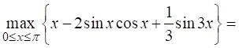
Hint 1: Simplify: 2 sin x cos x = sin 2x. Differentiate.
Hint 2: g' = 1 − 2cos 2x + cos 3x; check the critical points and the end points.
What this tests: Absolute maximum
1. Critical points in [0, π] include π/6 and 5π/6.
2. g(5π/6) = 5π/6 + √3/2 + 1/3 = (5π + 2 + 3√3)/6 ≈ 3.82, more than g(π) = π.
Answer: (2)
If this felt hard: Revise Application of Derivatives.
Claude’s answer: 2 · NTA final key: 2 · agrees · Answer recomputed with SymPy (tools/verify_pyq_solutions.py)
Q11 · Mathematics · MCQ · ID 3666947193
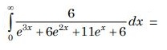
(1)
(2)
(3)
(4)
Hint 1: The denominator factorises in ex. Substitute t = ex.
Hint 2: e3x + 6e2x + 11ex + 6 = (t + 1)(t + 2)(t + 3); dx = dt/t.
What this tests: Partial fractions
1. 6/(t(t + 1)(t + 2)(t + 3)) = 1/t − 3/(t + 1) + 3/(t + 2) − 1/(t + 3).
2. Integral from 1 to ∞ = −[ln 1 − 3 ln 2 + 3 ln 3 − ln 4] = ln(32/27).
Answer: (4)
If this felt hard: Revise Integrals.
Claude’s answer: 4 · NTA final key: 4 · agrees · Answer recomputed with SymPy (tools/verify_pyq_solutions.py)
Q12 · Mathematics · MCQ · ID 3666947194
(1)
(2)
(3)
(4)
Hint 1: Where is sin x ≥ cos x on [−π, π]?
Hint 2: cos x is the larger on [−3π/4, π/4]; sin x elsewhere.
What this tests: Area under max of functions
1. Area = ∫|f| = (1 − √2/2) + (1 − √2/2) + (1 + √2/2) + (1 + √2/2).
2. = 4.
Answer: (2)
If this felt hard: Revise Application of Integrals.
Claude’s answer: 2 · NTA final key: 2 · agrees · Answer recomputed with SymPy (tools/verify_pyq_solutions.py)
Q13 · Mathematics · MCQ · ID 3666947195
(1)
(2)
(3)
(4)
Hint 1: 16 = 15 + 1. Write 42022 = 161011.
Hint 2: 161011 ≡ 1 (mod 15).
What this tests: Remainders
1. 42022/15 = integer + 1/15.
Answer: (1)
If this felt hard: Revise Binomial Theorem.
Claude’s answer: 1 · NTA final key: 1 · agrees · Answer recomputed by script (tools/verify_pyq_solutions.py)
Q14 · Mathematics · MCQ · ID 3666947196
(1)
(2)
(3)
(4)
Hint 1: Solve dy/dx = y + 7.
Hint 2: y = Cex − 7.
What this tests: Differential equations
1. y1 = 7ex − 7, y2 = 8ex − 7.
2. Their difference ex is never 0: no intersection.
Answer: (1)
If this felt hard: Revise Differential Equations.
Claude’s answer: 1 · NTA final key: 1 · agrees · Answer recomputed with SymPy (tools/verify_pyq_solutions.py)
Q15 · Mathematics · MCQ · ID 3666947197
(1)
(2)
(3)
(4)
Hint 1: Find A and B on the y-axis from the tangent and normal.
Hint 2: A = (0, 4), B = (0, −8): circle x2 + (y + 2)2 = 36. The tangents at P, Q meet at the pole of x = 2√5.
What this tests: Pole and polar
1. Polar of (α, β): αx + (β + 2)(y + 2) = 36. For it to be x = 2√5: β = −2, α = 18/√5.
2. α2 − β2 = 324/5 − 4 = 304/5.
Answer: (3)
If this felt hard: Revise Conic Sections and Circles.
Claude’s answer: 3 · NTA final key: 3 · agrees · Answer recomputed with SymPy (tools/verify_pyq_solutions.py)
Q16 · Mathematics · MCQ · ID 3666947198
(1)
(2)
(3)
(4)
Hint 1: Focal chord length for y2 = 4ax: a(t + 1/t)2.
Hint 2: a = 9: (t + 1/t)2 = 100/9, so t = 3 (acute angle, P above).
What this tests: Focal chords
1. P = (81, 54), Q = (1, −6); M = (P + 3Q)/4 = (21, 9).
2. PQ slope 3/4; perpendicular: 4x + 3y = 111.
3. (−3, 43) gives 117: not on it.
Answer: (3)
If this felt hard: Revise Conic Sections (parabola).
Claude’s answer: 3 · NTA final key: 3 · agrees · Answer recomputed with SymPy (tools/verify_pyq_solutions.py)
Q17 · Mathematics · MCQ · ID 3666947199
(1)
(2)
(3)
(4)
Hint 1: The line of shortest distance is along d1 × d2.
Hint 2: (2, 0, 1) × (1, −1, 1) = (1, −1, −2).
What this tests: Distance along a direction
1. From (−1, 2, 3) move t(1, −1, −2) to the plane: 4 − 3t = 10, t = −2.
2. Distance = 2√6.
Answer: (2)
If this felt hard: Revise Three Dimensional Geometry.
Claude’s answer: 2 · NTA final key: 2 · agrees · Answer recomputed with SymPy (tools/verify_pyq_solutions.py)
Q18 · Mathematics · MCQ · ID 3666947200
(1)
(2)
(3)
(4)
Hint 1: X can be 1, 2 or 3. List the cases.
Hint 2: P(H) = 3/4. X = 1: H; X = 2: TH; X = 3: TTH or TTT.
What this tests: Expectation
1. E(X) = 3/4 + 2(3/16) + 3(1/16) = 21/16.
Answer: (1)
If this felt hard: Revise Probability.
Claude’s answer: 1 · NTA final key: 1 · agrees · Answer recomputed by script (tools/verify_pyq_solutions.py)
Q19 · Mathematics · ID 3666947201
Left out of the bank: dropped (NTA).
Q20 · Mathematics · MCQ · ID 3666947202
(1)
(2)
(3)
(4)
Hint 1: Is the inner implication always true?
Hint 2: If A ∧ (B ∨ C) is true, A is true, so A ∨ B is true.
What this tests: Logical equivalence
1. The statement is T ⇒ A, i.e. A.
2. Negation: ∼A.
Answer: (3)
If this felt hard: Revise Mathematical Reasoning.
Claude’s answer: 3 · NTA final key: 3 · agrees · Answer recomputed by script (tools/verify_pyq_solutions.py)
Note: Mathematical reasoning is no longer in the JEE Main syllabus.
Q21 · Mathematics · Numerical · ID 3666947203
Hint 1: Write w with z = x + iy and find the circle Re(w) = 0.
Hint 2: Circle of radius 1 touching y = 1 and the y-axis in the first quadrant: centre (1, 2), so k1 = −2, k2 = 4, λ = 4.
What this tests: Circles in the complex plane
1. Im(w) = 0: 4x − 2y + 4 = 0, i.e. y = 2x + 2.
2. Meets (x − 1)2 + (y − 2)2 = 1 at x = 0 and x = 2/5.
3. AB2 = 4/5; 30AB2 = 24.
Answer: 24
If this felt hard: Revise Complex Numbers.
Claude’s answer: 24 · NTA final key: 24 · agrees · Answer recomputed with SymPy (tools/verify_pyq_solutions.py)
Note: Takes centre (1, 2) (the circle lying above y = 1).
Q22 · Mathematics · Numerical · ID 3666947204
Hint 1: Seven digits from 1–4 summing to 12: the excess over 7 ones is 5.
Hint 2: Count compositions of 5 into 7 parts each 0–3.
What this tests: Counting with generating functions
1. Coefficient of t5 in (1 + t + t2 + t3)7 = 413.
Answer: 413
If this felt hard: Revise Permutations and Combinations.
Claude’s answer: 413 · NTA final key: 413 · agrees · Answer recomputed by script (tools/verify_pyq_solutions.py)
Q23 · Mathematics · Numerical · ID 3666947205
Hint 1: Sum of all coefficients: put x = 1.
Hint 2: (1 − 6)n − α = 649; the constant term has r = n/4.
What this tests: Binomial coefficients
1. n = 4: 625 − α = 649 gives α = −24 = C(4,1)(−6).
2. x−4: r = 3, coefficient C(4,3)(−6)3 = −864.
3. λ = −864/−24 = 36.
Answer: 36
If this felt hard: Revise Binomial Theorem.
Claude’s answer: 36 · NTA final key: 36 · agrees · Answer recomputed with SymPy (tools/verify_pyq_solutions.py)
Q24 · Mathematics · Numerical · ID 3666947206
Hint 1: Pair the terms: 2(2k)2 − (2k + 1)2.
Hint 2: Each pair = 4k2 − 4k − 1, k = 1..10.
What this tests: Series
1. Σ(4k2 − 4k − 1) = 4(385) − 4(55) − 10 = 1310.
Answer: 1310
If this felt hard: Revise Sequences and Series.
Claude’s answer: 1310 · NTA final key: 1310 · agrees · Answer recomputed with SymPy (tools/verify_pyq_solutions.py)
Q25 · Mathematics · Numerical · ID 3666947207
Hint 1: Build S1, then S2, step by step.
Hint 2: C1 = 1/2, S1 = x/2 + x2/2; C2 = 7/12, S2 = 7x/12 + x2/2 + x3/3.
What this tests: Recursive integrals
1. S2(3) = 7/4 + 9/2 + 9 = 61/4.
2. C3 = 1 − ∫01S2 = 11/24, 6C3 = 11/4.
3. Sum = 18.
Answer: 18
If this felt hard: Revise Integrals.
Claude’s answer: 18 · NTA final key: 18 · agrees · Answer recomputed with SymPy (tools/verify_pyq_solutions.py)
Q26 · Mathematics · Numerical · ID 3666947208
Hint 1: Tangent y = mx + c to y2/25 − x2/16 = 1: c2 = 25 − 16m2.
Hint 2: Through (4, 1): 4m2 − m − 3 = 0, so m = 1, −3/4.
What this tests: Tangents to a hyperbola
1. Slopes 1 and 3/4 with positive x-intercepts: y = x − 3 (α = 3) and y = 3x/4 − 4 (β = 16/3).
2. Q = (−4, −7); PQ2 = 128.
3. 128/16 = 8.
Answer: 8
If this felt hard: Revise Conic Sections.
Claude’s answer: 8 · NTA final key: 8 · agrees · Answer recomputed with SymPy (tools/verify_pyq_solutions.py)
Q27 · Mathematics · Numerical · ID 3666947209
Hint 1: Use the image formula.
Hint 2: Plane value at the point is −1, |n|2 = 6.
What this tests: Image in a plane
1. P = (2, 1, 3).
2. 16 + 9 + (α − 3)2 = 169: α = 15.
Answer: 15
If this felt hard: Revise Three Dimensional Geometry.
Claude’s answer: 15 · NTA final key: 15 · agrees · Answer recomputed with SymPy (tools/verify_pyq_solutions.py)
Q28 · Mathematics · Numerical · ID 3666947210
Hint 1: a ⊥ c here. Solve b × c = a as b = (c × a)/|c|2 + tc.
Hint 2: c × a = (0, 11, 11), |c|2 = 22.
What this tests: Vector equations
1. b = (0, 1/2, 1/2) + tc; |b|2 = 1/2 + 22t2 = 50 gives t = ±3/2.
2. |b + c|2 = 50 + 22 + 44t = 72 ± 66.
3. |72 − |b + c|2| = 66.
Answer: 66
If this felt hard: Revise Vector Algebra.
Claude’s answer: 66 · NTA final key: 66 · agrees · Answer recomputed with SymPy (tools/verify_pyq_solutions.py)
Q29 · Mathematics · Numerical · ID 3666947211
Hint 1: Use the mean to find α.
Hint 2: 288 + 7α = 5(64 + α).
What this tests: Mean deviation and variance
1. α = 16, N = 80.
2. MD = 128/80 = 1.6; variance = 352/80 = 4.4.
3. 48/6 = 8.
Answer: 8
If this felt hard: Revise Statistics.
Claude’s answer: 8 · NTA final key: 8 · agrees · Answer recomputed with SymPy (tools/verify_pyq_solutions.py)
Q30 · Mathematics · Numerical · ID 3666947212
Hint 1: Convert both sin−1 terms into tan−1.
Hint 2: sin−1((x + 1)/√((x + 1)2 + 1)) = tan−1(x + 1).
What this tests: Inverse trigonometric functions
1. tan−1(x + 1) − tan−1x = π/4 gives x2 + x = 0: x = 0, −1.
2. Both give x2 + x + 5 = 5: sin(5π/2) − cos 5π = 2.
3. Sum 4.
Answer: 4
If this felt hard: Revise Inverse Trigonometric Functions.
Claude’s answer: 4 · NTA final key: 4 · agrees · Answer recomputed with SymPy (tools/verify_pyq_solutions.py)
Q31 · Physics · MCQ · ID 3666947213
(1)
(2)
(3)
(4)
Hint 1: K = mv2/2: add relative errors.
Hint 2: ΔK/K = Δm/m + 2Δv/v.
What this tests: Errors
1. K = 1000 J; ΔK/K = 0.1 + 0.04 = 0.14.
2. ΔK = 140 J.
Answer: (2)
If this felt hard: Revise Units and Measurements.
Claude’s answer: 2 · NTA final key: 2 · agrees · Answer recomputed by script (tools/verify_pyq_solutions.py)
Q32 · Physics · MCQ · ID 3666947214
(1)
(2)
(3)
(4)
Hint 1: To cross the tunnel, a train covers L + its own length.
Hint 2: tA = (L + l)/30, tB = (L + 4l)/20.
What this tests: Kinematics
1. (64l)/20 − (61l)/30 = 35 gives l = 30 m.
2. L = 1800 m.
Answer: (1)
If this felt hard: Revise Motion in a Straight Line.
Claude’s answer: 1 · NTA final key: 1 · agrees · Answer recomputed by script (tools/verify_pyq_solutions.py)
Q33 · Physics · MCQ · ID 3666947215
(1)
(2)
(3)
(4)
Hint 1: After half a turn, where is A, and how far has the centre moved?
Hint 2: A goes from the top to the bottom; the centre moves πR.
What this tests: Rolling motion
1. Horizontal πR, vertical 2R.
2. Displacement R√(π2 + 4).
Answer: (4)
If this felt hard: Revise System of Particles and Rotational Motion.
Claude’s answer: 4 · NTA final key: 4 · agrees · Answer recomputed by script (tools/verify_pyq_solutions.py)
Q34 · Physics · MCQ · ID 3666947216
(1)
(2)
(3)
(4)
Hint 1: KE = p2/2m.
Hint 2: Same p: m ∝ 1/KE.
What this tests: Momentum and energy
1. 9 : 16.
Answer: (2)
If this felt hard: Revise Work, Energy and Power.
Claude’s answer: 2 · NTA final key: 2 · agrees · Answer recomputed by script (tools/verify_pyq_solutions.py)
Q35 · Physics · MCQ · ID 3666947217
(1)
(2)
(3)
(4)
Hint 1: Topic: Impulse. Which rule or fact from it settles this question?
Hint 2: Impulse on the gun = momentum given to the bullet.
What this tests: Impulse
1. 0.01 × 600 = 6 N s.
Answer: (3)
If this felt hard: Revise Laws of Motion.
Claude’s answer: 3 · NTA final key: 3 · agrees · Answer recomputed by script (tools/verify_pyq_solutions.py)
Q36 · Physics · MCQ · ID 3666947218
(1)
(2)
(3)
(4)
Hint 1: Topic: Escape velocity. Which rule or fact from it settles this question?
Hint 2: ve ∝ √(M/R).
What this tests: Escape velocity
1. √(9/4) = 1.5: 16.8 km/s.
Answer: (3)
If this felt hard: Revise Gravitation.
Claude’s answer: 3 · NTA final key: 3 · agrees · Answer recomputed by script (tools/verify_pyq_solutions.py)
Q37 · Physics · MCQ · ID 3666947219
(1)
(2)
(3)
(4)
Hint 1: Continuity, then Bernoulli.
Hint 2: vA = ABvB/AA.
What this tests: Bernoulli's equation
1. vA = 25 × 10−6 × 0.6/1.5 × 10−4 = 0.1 m/s.
2. PA − PB = 500(0.36 − 0.01) = 175 Pa.
Answer: (2)
If this felt hard: Revise Mechanical Properties of Fluids.
Claude’s answer: 2 · NTA final key: 2 · agrees · Answer recomputed by script (tools/verify_pyq_solutions.py)
Q38 · Physics · MCQ · ID 3666947220
(1)
(2)
(3)
(4)
Hint 1: B = −V dP/dV.
Hint 2: dP/dV = −3aV−4.
What this tests: Bulk modulus
1. B = 3aV−3 = 3P.
Answer: (1)
If this felt hard: Revise Mechanical Properties of Solids.
Claude’s answer: 1 · NTA final key: 1 · agrees · Answer recomputed with SymPy (tools/verify_pyq_solutions.py)
Q39 · Physics · MCQ · ID 3666947221
(1) 
(2) 
(3) 
(4)
Hint 1: vrms = √(3RT/M), vavg = √(8RT/πM).
Hint 2: Ratio2 = 3π/8.
What this tests: Molecular speeds
1. With π = 22/7: 3π/8 = 33/28 = 1 + 5/28.
2. x = 28.
Answer: (4)
If this felt hard: Revise Kinetic Theory.
Claude’s answer: 4 · NTA final key: 4 · agrees · Answer recomputed by script (tools/verify_pyq_solutions.py)
Q40 · Physics · MCQ · ID 3666947222
(1)
(2)
(3)
(4)
Hint 1: TE − PE = KE. How does KE vary with x?
Hint 2: KE = (1/2)k(A2 − x2).
What this tests: Energy in SHM
1. Maximum at x = 0, zero at ±A, curving downwards: graph 1.
Answer: (1)
If this felt hard: Revise Oscillations.
Claude’s answer: 1 · NTA final key: 1 · agrees · Theory question: not computable, needs a teacher’s review
Q41 · Physics · MCQ · ID 3666947223
(1) 
(2) 
(3) 
(4)
Hint 1: Power = mgh/t for each motor.
Hint 2: P1 = 1000 W, P2 = 1250/3 W.
What this tests: Power
1. Ratio 2.4 = 3√x/(√x + 1).
2. √x = 4, x = 16.
Answer: (3)
If this felt hard: Revise Work, Energy and Power.
Claude’s answer: 3 · NTA final key: 3 · agrees · Answer recomputed with SymPy (tools/verify_pyq_solutions.py)
Q42 · Physics · MCQ · ID 3666947224
(1)
(2)
(3)
(4)
Hint 1: Which equation has a time derivative?
Hint 2: Faraday's law.
What this tests: Maxwell's equations
1. ∮E·dl = −dΦB/dt; in static conditions it reduces to 0.
Answer: (2)
If this felt hard: Revise Electromagnetic Waves.
Claude’s answer: 2 · NTA final key: 2 · agrees · Theory question: not computable, needs a teacher’s review
Q43 · Physics · MCQ · ID 3666947225
(1)
(2)
(3)
(4)
Hint 1: A changing B needs a changing current. Which sources give that?
Hint 2: A linearly changing E gives a constant displacement current (steady B).
What this tests: Sources of magnetic fields
1. Permanent magnet, DC, linearly changing E: steady fields.
2. A decelerating charge gives a changing B.
Answer: (2)
If this felt hard: Revise Electromagnetic Waves.
Claude’s answer: 2 · NTA final key: 2 · agrees · Theory question: not computable, needs a teacher’s review
Note: Teacher look: an antenna with a digital signal would also give a time-varying field; NTA's key is D only.
Q44 · Physics · MCQ · ID 3666947226
(1)
(2)
(3)
(4)
Hint 1: Topic: Apparent depth. Which rule or fact from it settles this question?
Hint 2: Apparent depth adds layer by layer: real thickness/μ.
What this tests: Apparent depth
1. (d/2)/n1 + (d/2)/n2 = d(n1 + n2)/(2n1n2).
Answer: (4)
If this felt hard: Revise Ray Optics.
Claude’s answer: 4 · NTA final key: 4 · agrees · Answer recomputed by script (tools/verify_pyq_solutions.py)
Q45 · Physics · MCQ · ID 3666947227
(1)
(2)
(3)
(4)
Hint 1: Topic: Threshold wavelength. Which rule or fact from it settles this question?
Hint 2: λ0 = hc/φ.
What this tests: Threshold wavelength
1. 1242/4.5 − 1242/9 = 276 − 138 = 138 nm.
Answer: (4)
If this felt hard: Revise Dual Nature of Radiation and Matter.
Claude’s answer: 4 · NTA final key: 4 · agrees · Answer recomputed by script (tools/verify_pyq_solutions.py)
Q46 · Physics · MCQ · ID 3666947228
(1)
(2)
(3)
(4)
Hint 1: Topic: Q value. Which rule or fact from it settles this question?
Hint 2: Q = (mass lost) × 931.5 MeV.
What this tests: Q value
1. Δm = 0.00456 u; Q ≈ 4.25 MeV.
Answer: (2)
If this felt hard: Revise Nuclei.
Claude’s answer: 2 · NTA final key: 2 · agrees · Answer recomputed by script (tools/verify_pyq_solutions.py)
Q47 · Physics · MCQ · ID 3666947229
(1)
(2)
(3)
(4)
Hint 1: Each input passes through a NOT; then a NAND. Simplify.
Hint 2: NAND(Ā, B̄) = A + B.
What this tests: Logic gates
1. Y = A OR B.
2. Y is 1 whenever either input is 1: diagram 3.
Answer: (3)
If this felt hard: Revise Semiconductor Electronics.
Claude’s answer: 3 · NTA final key: 3 · agrees · Theory question: not computable, needs a teacher’s review
Note: Figure reading of the timing diagrams.
Q48 · Physics · MCQ · ID 3666947230
(1)
(2)
(3)
(4)
Hint 1: Topic: Ionosphere. Which rule or fact from it settles this question?
Hint 2: Recall the heights of atmospheric layers.
What this tests: Ionosphere
1. F1: 170–190 km. D: 65–75 km. Troposphere: 10 km. E: 100 km.
Answer: (3)
If this felt hard: Revise Communication Systems.
Claude’s answer: 3 · NTA final key: 3 · agrees · Theory question: not computable, needs a teacher’s review
Note: Communication systems is no longer in the JEE Main syllabus.
Q49 · Physics · MCQ · ID 3666947231
(1)
(2)
(3)
(4)
Hint 1: Convert dyne/C to N/C.
Hint 2: 10 dyne/C = 10−4 N/C; τ = pE sin θ.
What this tests: Torque on a dipole
1. p = 0.01 × 0.4 × 10−3 = 4 × 10−6 C m.
2. τ = 4 × 10−6 × 10−4 × 0.5 = 2 × 10−10 N m.
Answer: (2)
If this felt hard: Revise Electric Charges and Fields.
Claude’s answer: 2 · NTA final key: 2 · agrees · Answer recomputed by script (tools/verify_pyq_solutions.py)
Q50 · Physics · MCQ · ID 3666947232
(1)
(2)
(3)
(4)
Hint 1: Same current I: P = I2Req.
Hint 2: A: 1.5R, B: 2R/3, C: R/3, D: 3R.
What this tests: Power in resistors
1. PC < PB < PA < PD.
Answer: (2)
If this felt hard: Revise Current Electricity.
Claude’s answer: 2 · NTA final key: 2 · agrees · Answer recomputed by script (tools/verify_pyq_solutions.py)
Q51 · Physics · Numerical · ID 3666947233
Hint 1: Topic: Bohr radius. Which rule or fact from it settles this question?
Hint 2: r ∝ n2/Z.
What this tests: Bohr radius
1. r1 = 4/2 = 2, r2 = 16/4 = 4 (units of a0).
2. Ratio 2.
Answer: 2
If this felt hard: Revise Atoms.
Claude’s answer: 2 · NTA final key: 2 · agrees · Answer recomputed by script (tools/verify_pyq_solutions.py)
Q52 · Physics · Numerical · ID 3666947234
Hint 1: To the fish, the bird's height looks μ times larger.
Hint 2: Apparent rate of approach = 8 + μv.
What this tests: Apparent motion
1. 8 + (4/3)v = 12, v = 3 m/s.
Answer: 3
If this felt hard: Revise Ray Optics.
Claude’s answer: 3 · NTA final key: 3 · agrees · Answer recomputed by script (tools/verify_pyq_solutions.py)
Q53 · Physics · Numerical · ID 3666947235
Hint 1: Rate of energy storage = LI dI/dt = I(E − IR).
Hint 2: This is largest at I = E/2R.
What this tests: Energy in an inductor
1. Max rate = E2/(4R) = E2/100.
2. a = 2, b = 50: b/a = 25.
Answer: 25
If this felt hard: Revise Electromagnetic Induction.
Claude’s answer: 25 · NTA final key: 25 · agrees · Answer recomputed with SymPy (tools/verify_pyq_solutions.py)
Q54 · Physics · Numerical · ID 3666947236
Hint 1: Between the line and the sheet, the two fields point in opposite directions.
Hint 2: Eline = λ/(2πε0r), Esheet = σ/(2ε0).
What this tests: Superposition of fields
1. With λ = 2σ: EP = |σ/3 − σ/2|/ε0 = σ/(6ε0); EQ = |σ/4 − σ/2|/ε0 = σ/(4ε0).
2. EP/EQ = 2/3 = 4/a, so a = 6.
Answer: 6
If this felt hard: Revise Electric Charges and Fields.
Claude’s answer: 6 · NTA final key: 6 · agrees · Answer recomputed by script (tools/verify_pyq_solutions.py)
Q55 · Physics · Numerical · ID 3666947237
Hint 1: Topic: Elastic energy. Which rule or fact from it settles this question?
Hint 2: U = (1/2)(YA/L)x2.
What this tests: Elastic energy
1. A = 2UL/(Yx2) = 2 × 80 × 20/(2 × 1011 × 4 × 10−4) = 4 × 10−5 m2 = 40 mm2.
Answer: 40
If this felt hard: Revise Mechanical Properties of Solids.
Claude’s answer: 40 · NTA final key: 40 · agrees · Answer recomputed by script (tools/verify_pyq_solutions.py)
Q56 · Physics · Numerical · ID 3666947238
Hint 1: L = (2/5)mR2ω, E = (7/10)mR2ω2.
Hint 2: L/E = 4/(7ω).
What this tests: Rolling sphere
1. 4/(7ω) = π/22 with π = 22/7: ω = 4 rad/s.
Answer: 4
If this felt hard: Revise System of Particles and Rotational Motion.
Claude’s answer: 4 · NTA final key: 4 · agrees · Answer recomputed by script (tools/verify_pyq_solutions.py)
Q57 · Physics · Numerical · ID 3666947239
Hint 1: KE = (1/2)k(A2 − y2).
Hint 2: y = A cos 30°: A2 − y2 = A2/4.
What this tests: Energy in SHM
1. kA2/8 = 200 with A = 0.4 m: k = 104 N/m.
Answer: 4
If this felt hard: Revise Oscillations.
Claude’s answer: 4 · NTA final key: 4 · agrees · Answer recomputed by script (tools/verify_pyq_solutions.py)
Q58 · Physics · Numerical · ID 3666947240
Hint 1: Write the shunt and series conditions.
Hint 2: IgG = (0.25 − Ig) × 5 and Ig(G + 1050) = 25.
What this tests: Galvanometer conversion
1. Ig = 1.25/(G + 5).
2. 1.25(G + 1050) = 25(G + 5): G = 50 Ω.
Answer: 50
If this felt hard: Revise Moving Charges and Magnetism.
Claude’s answer: 50 · NTA final key: 50 · agrees · Answer recomputed with SymPy (tools/verify_pyq_solutions.py)
Q59 · Physics · Numerical · ID 3666947241
Hint 1: β = slope of IC against IB.
Hint 2: Power gain = β2RC/RB.
What this tests: Transistor gain
1. β = 40 mA/400 μA = 100.
2. Gain = 104 × 1/10 = 103.
Answer: 3
If this felt hard: Revise Semiconductor Electronics.
Claude’s answer: 3 · NTA final key: 3 · agrees · Answer recomputed by script (tools/verify_pyq_solutions.py)
Note: Figure reading: I_{C} from 10 to 50 mA as I_{B} goes 100 to 500 μA.
Q60 · Physics · Numerical · ID 3666947242
Hint 1: Topic: Power. Which rule or fact from it settles this question?
Hint 2: P = V2/R. Each half has R/2.
What this tests: Power
1. P2 = 2V2/(R/2) = 4P1.
2. 4 = √16.
Answer: 16
If this felt hard: Revise Current Electricity.
Claude’s answer: 16 · NTA final key: 16 · agrees · Answer recomputed by script (tools/verify_pyq_solutions.py)
Q61 · Chemistry · MCQ · ID 3666947243
(1)
(2)
(3)
(4)
Hint 1: Topic: Bohr energies. Which rule or fact from it settles this question?
Hint 2: En ∝ 1/n2.
What this tests: Bohr energies
1. n = 3: 1/9 of the n = 1 value.
Answer: (2)
If this felt hard: Revise Structure of Atom.
Claude’s answer: 2 · NTA final key: 2 · agrees · Answer recomputed by script (tools/verify_pyq_solutions.py)
Q62 · Chemistry · MCQ · ID 3666947244
(1)
(2)
(3)
(4)
Hint 1: Use MO bond orders and unpaired electrons.
Hint 2: NO has 15 electrons (one unpaired, BO 2.5); NO+ has 14 (BO 3).
What this tests: MO theory
1. NO → NO+: bond order up, paramagnetic to diamagnetic.
Answer: (1)
If this felt hard: Revise Chemical Bonding.
Claude’s answer: 1 · NTA final key: 1 · agrees · Theory question: not computable, needs a teacher’s review
Q63 · Chemistry · MCQ · ID 3666947245
(1)
(2)
(3)
(4)
Hint 1: Topic: Protective colloids. Which rule or fact from it settles this question?
Hint 2: Why do lyophilic sols protect lyophobic sols?
What this tests: Protective colloids
1. The lyophilic sol forms a protective film over the lyophobic particles.
Answer: (3)
If this felt hard: Revise Surface Chemistry.
Claude’s answer: 3 · NTA final key: 3 · agrees · Theory question: not computable, needs a teacher’s review
Note: Surface chemistry is no longer in the JEE Main syllabus.
Q64 · Chemistry · MCQ · ID 3666947246
(1)
(2)
(3)
(4)
Hint 1: Check each statement against NCERT.
Hint 2: Cl has the more negative electron gain enthalpy; NO is a neutral oxide.
What this tests: Periodic properties
1. A is not correct (Cl is more negative than F).
2. B is correct (IE generally decreases down a group).
3. C is correct: NCERT says electronegativity varies with the atom it is bonded to.
4. D is not correct (NO is neutral).
5. 'A and D only' is not an option.
Answer: (0)
If this felt hard: Revise Classification of Elements.
Claude’s answer: 0 · NTA final key: 4 · DISAGREES: flag for the owner · disputed
Note: DISPUTED: by NCERT, statement C (electronegativity depends on the bonded atom) is correct, so the 'not correct' set is A and D only, which is not an option ('0' means none). NTA's final key is A, C and D. Owner/teacher to decide.
Q65 · Chemistry · MCQ · ID 3666947247
(1)
(2)
(3)
(4)
Hint 1: How is zinc refined?
Hint 2: Liquation is used for low-melting metals like tin.
What this tests: Refining methods
1. Zinc is refined by distillation, not liquation.
Answer: (3)
If this felt hard: Revise General Principles of Isolation of Elements.
Claude’s answer: 3 · NTA final key: 3 · agrees · Theory question: not computable, needs a teacher’s review
Note: Metallurgy is no longer in the JEE Main syllabus.
Q66 · Chemistry · MCQ · ID 3666947248
(1)
(2)
(3) 
(4) 
Hint 1: Compare zeolite (permutit) and ion-exchange resins.
Hint 2: Resins (H+ and OH− forms) remove all ions.
What this tests: Water softening
1. I false: the resin method is more efficient.
2. II false: it gives demineralised water, not sodium salts.
Answer: (2)
If this felt hard: Revise Hydrogen.
Claude’s answer: 2 · NTA final key: 2 · agrees · Theory question: not computable, needs a teacher’s review
Q67 · Chemistry · MCQ · ID 3666947249
(1)
(2)
(3)
(4)
Hint 1: Be(OH)2 is amphoteric. What forms with a strong base?
Hint 2: Sr[Be(OH)4].
What this tests: Amphoteric beryllium
1. Be is in the anion [Be(OH)4]2−, tetrahedral.
2. 'Be is in the cationic part' is incorrect.
Answer: (3)
If this felt hard: Revise The s-Block Elements.
Claude’s answer: 3 · NTA final key: 3 · agrees · Theory question: not computable, needs a teacher’s review
Q68 · Chemistry · MCQ · ID 3666947250
(1)
(2)
(3)
(4)
Hint 1: Use VSEPR for ClF5.
Hint 2: 5 bond pairs + 1 lone pair.
What this tests: Interhalogens
1. Square pyramidal; ClF5 is a colourless liquid at room temperature.
Answer: (2)
If this felt hard: Revise The p-Block Elements.
Claude’s answer: 2 · NTA final key: 2 · agrees · Theory question: not computable, needs a teacher’s review
Q69 · Chemistry · MCQ · ID 3666947251
(1)
(2)
(3)
(4)
Hint 1: Recall borazine's structure.
Hint 2: It is 'inorganic benzene' with B–N π-delocalisation.
What this tests: Borazine
1. Banana bonds are in diborane, not borazine.
Answer: (2)
If this felt hard: Revise The p-Block Elements.
Claude’s answer: 2 · NTA final key: 2 · agrees · Theory question: not computable, needs a teacher’s review
Q70 · Chemistry · MCQ · ID 3666947252
(1)
(2)
(3)
(4)
Hint 1: Third IE is high when the M2+ ion is extra stable.
Hint 2: Eu2+ is f7; Yb2+ is f14.
What this tests: Lanthanoid ionisation enthalpies
1. Eu and Yb.
Answer: (2)
If this felt hard: Revise The d- and f-Block Elements.
Claude’s answer: 2 · NTA final key: 2 · agrees · Theory question: not computable, needs a teacher’s review
Q71 · Chemistry · MCQ · ID 3666947253
(1)
(2)
(3)
(4)
Hint 1: Recall each metal complex's use.
Hint 2: Chlorophyll has Mg; photography uses [Ag(S2O3)2]3−.
What this tests: Uses of complexes
1. A and C are mismatched.
Answer: (2)
If this felt hard: Revise Coordination Compounds.
Claude’s answer: 2 · NTA final key: 2 · agrees · Theory question: not computable, needs a teacher’s review
Q72 · Chemistry · MCQ · ID 3666947254
(1)
(2)
(3)
(4)
Hint 1: Topic: Ozone depletion. Which rule or fact from it settles this question?
Hint 2: What does UV split off from CFCs?
What this tests: Ozone depletion
1. Cl·.
Answer: (3)
If this felt hard: Revise Environmental Chemistry.
Claude’s answer: 3 · NTA final key: 3 · agrees · Theory question: not computable, needs a teacher’s review
Note: Environmental chemistry is no longer in the JEE Main syllabus.
Q73 · Chemistry · MCQ · ID 3666947255
(1)
(2)
(3)
(4)
Hint 1: Which molecule can separate charge into two aromatic rings?
Hint 2: Cyclopropenyl cation (2π) and cyclopentadienyl anion (6π).
What this tests: Dipole moments and aromaticity
1. Calicene (triafulvene–pentafulvene) has a large dipole.
Answer: (4)
If this felt hard: Revise Hydrocarbons.
Claude’s answer: 4 · NTA final key: 4 · agrees · Theory question: not computable, needs a teacher’s review
Note: Beyond NCERT.
Q74 · Chemistry · MCQ · ID 3666947256
(1)
(2)
(3)
(4)
Hint 1: What does AlCl3/HCl do to an alkane on heating?
Hint 2: Isomerisation.
What this tests: Isomerisation of alkanes
1. n-Hexane → 2-methylpentane.
Answer: (4)
If this felt hard: Revise Hydrocarbons.
Claude’s answer: 4 · NTA final key: 4 · agrees · Theory question: not computable, needs a teacher’s review
Q75 · Chemistry · MCQ · ID 3666947257
(1)
(2)
(3)
(4)
Hint 1: Strong nucleophile/base vs weak nucleophile in a protic solvent.
Hint 2: With ethanol the primary cation rearranges to tert-butyl.
What this tests: SN1 vs SN2
1. C2H5O−: SN2, isobutyl ethyl ether.
2. C2H5OH: SN1 after a hydride shift, tert-butyl ethyl ether.
Answer: (1)
If this felt hard: Revise Haloalkanes.
Claude’s answer: 1 · NTA final key: 1 · agrees · Theory question: not computable, needs a teacher’s review
Note: Teacher look: a primary halide in ethanol is slow; NTA's key assumes S_{N}1 with rearrangement.
Q76 · Chemistry · MCQ · ID 3666947258
(1)
(2)
(3)
(4)
Hint 1: A cation next to a small ring can expand the ring. How many times can this happen here?
Hint 2: Each expansion moves the cation to a carbon next to the other ring.
What this tests: Ring expansion
1. Cyclobutyl → cyclopentyl expansion, hydride shift, then the cyclopentane expands to six.
2. A further shift expands ring A again, giving a decalin-type cation.
3. Both rings end six-membered.
Answer: (1)
If this felt hard: Revise carbocation rearrangements.
Claude’s answer: 1 · NTA final key: 1 · agrees · Theory question: not computable, needs a teacher’s review
Note: Teacher look: the multi-step rearrangement is beyond NCERT; NTA's key is 'both rings become six-membered'.
Q77 · Chemistry · MCQ · ID 3666947259
(1)
(2)
(3)
(4)
Hint 1: What does hot NaOH do to a lactam (cyclic amide)?
Hint 2: Hydrolysis opens the ring.
What this tests: Amide hydrolysis
1. MeNH–(CH2)3–COOH after acidification.
Answer: (1)
If this felt hard: Revise Amines.
Claude’s answer: 1 · NTA final key: 1 · agrees · Theory question: not computable, needs a teacher’s review
Q78 · Chemistry · MCQ · ID 3666947260
(1)
(2)
(3)
(4)
Hint 1: HCl makes a tertiary cation next to a spiro cyclopentane. What can it do?
Hint 2: Ring expansion to a six-membered ring, then loss of H+.
What this tests: Ring expansion
1. The cyclopentane expands to cyclohexane; KOH frees the amine.
2. Product: option 4.
Answer: (4)
If this felt hard: Revise carbocation rearrangements.
Claude’s answer: 4 · NTA final key: 4 · agrees · Theory question: not computable, needs a teacher’s review
Note: Teacher look: structure read from small drawings; beyond NCERT.
Q79 · Chemistry · MCQ · ID 3666947261
(1)
(2)
(3)
(4)
Hint 1: Topic: Polymers. Which rule or fact from it settles this question?
Hint 2: Match each polymer.
What this tests: Polymers
1. Nylon 6: caprolactam. Vulcanised rubber: cross-linked. cis-polyisoprene: natural rubber. Polychloroprene: neoprene.
Answer: (2)
If this felt hard: Revise Polymers.
Claude’s answer: 2 · NTA final key: 2 · agrees · Theory question: not computable, needs a teacher’s review
Note: Polymers are no longer in the JEE Main syllabus.
Q80 · Chemistry · MCQ · ID 3666947262
(1)
(2)
(3)
(4)
Hint 1: HCN adds to the CHO, making a new stereocentre: two epimers.
Hint 2: Hydrolysis and HNO3 oxidation give tartaric acids.
What this tests: Kiliani synthesis
1. One epimer gives meso-tartaric acid, the other an optically active tartaric acid.
Answer: (2)
If this felt hard: Revise Biomolecules.
Claude’s answer: 2 · NTA final key: 2 · agrees · Theory question: not computable, needs a teacher’s review
Q81 · Chemistry · Numerical · ID 3666947263
Hint 1: MnO4− + 5Fe2+ + 8H+ → Mn2+ + 5Fe3+ + 4H2O.
Hint 2: FAS hexahydrate brings 6 H2O per formula.
What this tests: Redox titration
1. 2 KMnO4 react with 10 FAS: 8 H2O formed + 60 H2O of crystallisation.
2. 68.
Answer: 68
If this felt hard: Revise Redox Reactions.
Claude’s answer: 68 · NTA final key: 68 · agrees · Answer recomputed by script (tools/verify_pyq_solutions.py)
Note: Teacher look: NTA's 68 counts the 60 water molecules released from the hexahydrate; only 8 are produced by the reaction.
Q82 · Chemistry · Numerical · ID 3666947264
Hint 1: PV = ZnRT; n is constant.
Hint 2: V2 = V1(Z2/Z1)(T2/T1)(P1/P2).
What this tests: Real gases
1. V2 = 0.15 × (1.4/1.07) × (3/5) × (1/3) = 0.0393 dm3 ≈ 392 × 10−4.
Answer: 392
If this felt hard: Revise States of Matter.
Claude’s answer: 392 · NTA final key: 392 · agrees · Answer recomputed by script (tools/verify_pyq_solutions.py)
Note: Exact value 392.5 × 10^{−4}; NTA gives 392.
Q83 · Chemistry · Numerical · ID 3666947265
Hint 1: ΔHf is per mole of AB.
Hint 2: −200 = (1/2)x + (1/2)(0.5x) − x.
What this tests: Bond enthalpies
1. −0.25x = −200, x = 800 kJ/mol.
Answer: 800
If this felt hard: Revise Thermodynamics.
Claude’s answer: 800 · NTA final key: 800 · agrees · Answer recomputed by script (tools/verify_pyq_solutions.py)
Q84 · Chemistry · Numerical · ID 3666947266
Hint 1: Topic: Osmotic pressure. Which rule or fact from it settles this question?
Hint 2: Equal osmotic pressure: equal concentration (non-electrolytes).
What this tests: Osmotic pressure
1. 12/M per litre = 0.05: M = 240 g/mol.
Answer: 240
If this felt hard: Revise Solutions.
Claude’s answer: 240 · NTA final key: 240 · agrees · Answer recomputed by script (tools/verify_pyq_solutions.py)
Q85 · Chemistry · Numerical · ID 3666947267
Hint 1: Concentrations halve on mixing.
Hint 2: [Ba2+] = 0.025 M, [F−] = 0.010 M.
What this tests: Ionic product
1. Q = 0.025 × 10−4 = 2.5 × 10−6.
2. Q/Ksp = 5.
Answer: 5
If this felt hard: Revise Equilibrium.
Claude’s answer: 5 · NTA final key: 5 · agrees · Answer recomputed by script (tools/verify_pyq_solutions.py)
Q86 · Chemistry · Numerical · ID 3666947268
Hint 1: Mass = density × area × thickness.
Hint 2: Ni2+ needs 2 F per mole.
What this tests: Faraday's laws
1. Volume 0.01 cm3, mass 0.1 g, 0.1/60 mol.
2. Charge = 2 × 96500 × 0.1/60 = 321.7 C; t = 160.8 ≈ 161 s.
Answer: 161
If this felt hard: Revise Electrochemistry.
Claude’s answer: 161 · NTA final key: 161 · agrees · Answer recomputed by script (tools/verify_pyq_solutions.py)
Q87 · Chemistry · Numerical · ID 3666947269
Hint 1: Topic: First-order kinetics. Which rule or fact from it settles this question?
Hint 2: 87.5% done means 1/8 left.
What this tests: First-order kinetics
1. Three half-lives: x = 3.
Answer: 3
If this felt hard: Revise Chemical Kinetics.
Claude’s answer: 3 · NTA final key: 3 · agrees · Answer recomputed by script (tools/verify_pyq_solutions.py)
Q88 · Chemistry · Numerical · ID 3666947270
Hint 1: Find the sample mass from %C.
Hint 2: Mass C = 0.220 × 12/44 = 0.06 g.
What this tests: Combustion analysis
1. Sample = 0.06/0.24 = 0.25 g.
2. H = 0.126 × 2/18 = 0.014 g: 5.6% = 56 × 10−1.
Answer: 56
If this felt hard: Revise Organic Chemistry: Some Basic Principles.
Claude’s answer: 56 · NTA final key: 56 · agrees · Answer recomputed by script (tools/verify_pyq_solutions.py)
Q89 · Chemistry · Numerical · ID 3666947271
Hint 1: The first cation is secondary. Which shifts turn it into tertiary cations?
Hint 2: Methyl shift: (CH3)2C+–CH(CH3)–CH(CH3)2; a further hydride shift gives (CH3)2CH–C+(CH3)–CH(CH3)2. Hydride shift from the start: (CH3)3C–CH2–C+(CH3)2.
What this tests: Carbocation rearrangements
1. From (CH3)3C–CH2–C+(CH3)2: (CH3)3C–CH=C(CH3)2 and (CH3)3C–CH2–C(CH3)=CH2.
2. From the methyl-shifted cation: CH2=C(CH3)–CH(CH3)–CH(CH3)2 and (CH3)2C=C(CH3)–CH(CH3)2.
3. From the cation after the second shift: (CH3)2CH–C(=CH2)–CH(CH3)2 (new).
4. Total 5 alkenes.
Answer: 5
If this felt hard: Revise Alcohols (dehydration) and carbocation stability.
Claude’s answer: 5 · NTA final key: 5 · agrees · Theory question: not computable, needs a teacher’s review
Note: Counts alkenes from all three tertiary cations reachable by 1,2-shifts.
Q90 · Chemistry · Numerical · ID 3666947272
Hint 1: First find the Ca(OH)2 molarity from the HCl titration.
Hint 2: 10 mL Ca(OH)2 neutralises 10 mmol HCl.
What this tests: Titrations
1. [Ca(OH)2] = 0.5 M; 20 mL gives 20 mmol OH−.
2. 10 mL H2SO4: 2M × 10 = 20, M = 1.
Answer: 1
If this felt hard: Revise Some Basic Concepts of Chemistry.
Claude’s answer: 1 · NTA final key: 1 · agrees · Answer recomputed by script (tools/verify_pyq_solutions.py)